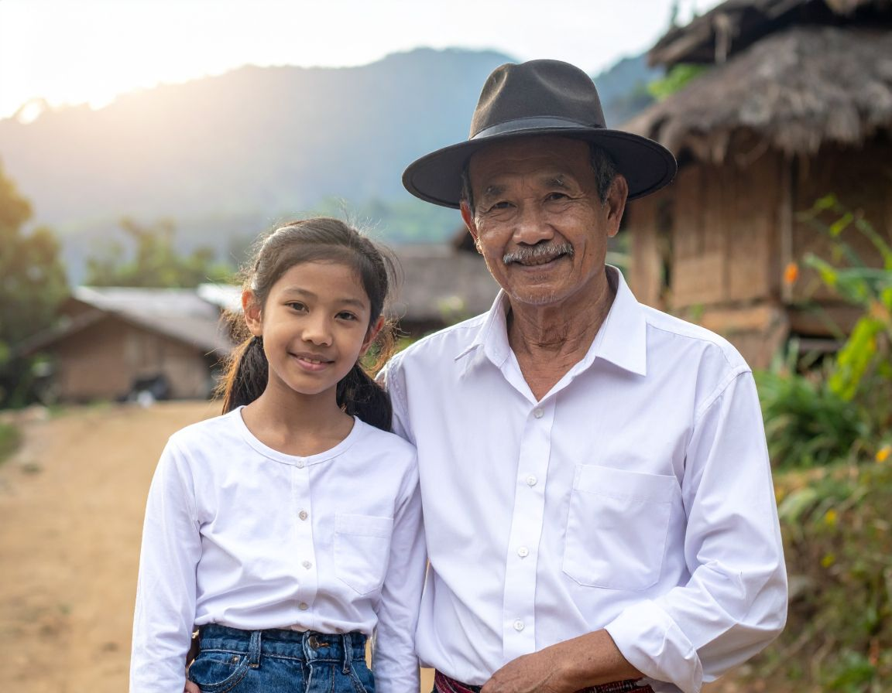

Brooklyn had never met her uncle before, so when he arrived with a warm smile and a dusty truck, her curiosity lit up brighter than the afternoon sun. He drove her toward the border, the road winding through thick forest and rising hills, until the world felt quieter and older. When they reached the edge of the hill tribe’s land, he guided her out, telling her stories of the people who lived there—how they wove their own clothes, grew their own food, and carried traditions older than any map. Brooklyn felt a flutter of excitement as she stepped forward, sensing that this meeting wasn’t just a visit but the beginning of a story she would remember for a long time.

| Finish |